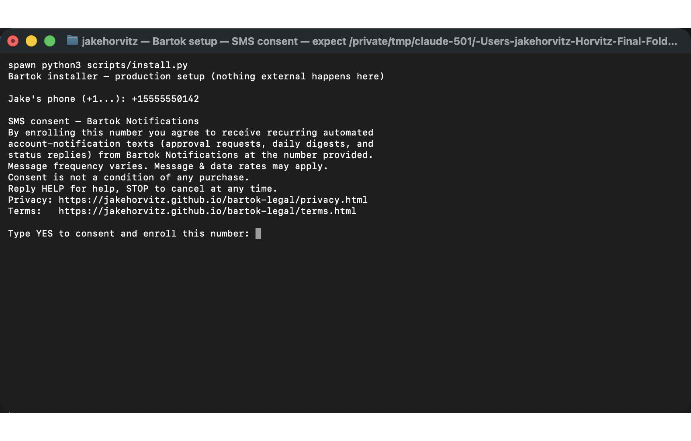
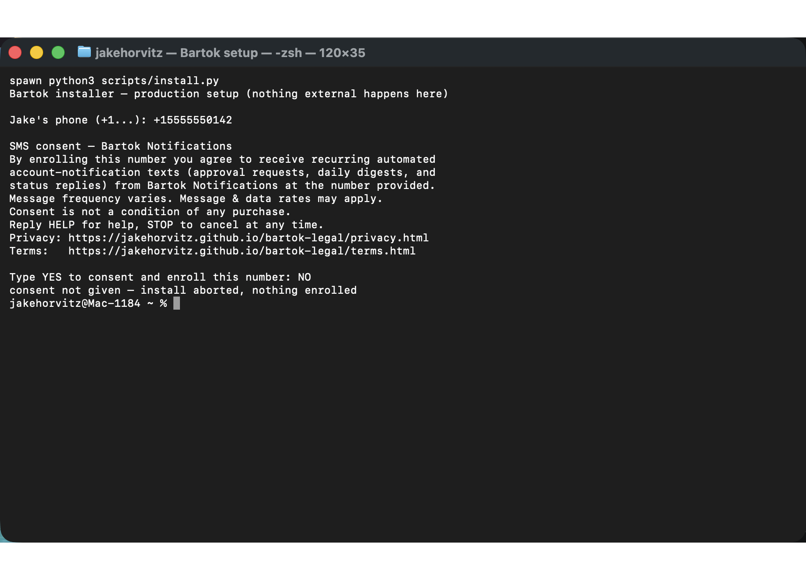

Effective date: August 31, 2026
Bartok Notifications is a personal, single-recipient SMS notification program operated by Jake Horvitz, a sole proprietor. This page documents the complete opt-in workflow and hosts screenshot proof of the consent experience, for A2P 10DLC campaign review.
Opt-in evidence for A2P 10DLC review. This page is the hosted proof of the complete consent experience for the Bartok Notifications messaging program, published at https://jakehorvitz.github.io/bartok-legal/optin.html. It shows the verbatim consent notice, the required disclosures, and two screenshots of the consent screen: one awaiting an active opt-in with nothing pre-filled or pre-selected, and one showing that declining enrolls nothing.
Why the opt-in is not a public web form. Bartok is self-hosted software that runs on the operator's own machine, and it sends messages to exactly one number: the operator's own mobile number, entered and consented to by the operator during setup. There are no customer, subscriber, or third-party recipients, so there is no public sign-up page to link. In place of a sign-up URL, this page hosts screenshots of the full consent experience, as directed for opt-in flows that are not publicly accessible.
| Program name | Bartok Notifications |
|---|---|
| Operator | Jake Horvitz, sole proprietor |
| Who receives messages | The operator's own mobile number only. The software has no recipient parameter; a single configured number is the only possible destination. |
| Message types | Approval requests, daily digests, and status replies to commands the operator texts first. |
| Message frequency | Varies by account activity; typically up to 10 messages per day. |
| Rates | Message and data rates may apply. |
| Opt-out / help | Reply STOP to cancel at any time. Reply HELP for help. |
A number is enrolled only by running the setup program on the operator's own computer. There is exactly one opt-in path and no other way for a number to be enrolled. During setup, the operator:
This is the exact consent notice displayed by the setup program:
SMS consent — Bartok Notifications By enrolling this number you agree to receive recurring automated account-notification texts (approval requests, daily digests, and status replies) from Bartok Notifications at the number provided. Message frequency varies. Message & data rates may apply. Consent is not a condition of any purchase. Reply HELP for help, STOP to cancel at any time. Privacy: https://jakehorvitz.github.io/bartok-legal/privacy.html Terms: https://jakehorvitz.github.io/bartok-legal/terms.html Type YES to consent and enroll this number: _


These are the exact three sample messages registered on the A2P 10DLC campaign, reproduced here verbatim so a reviewer can cross-check them against the campaign submission.
[Bartok] Batch B3: 4 items ready for review. Reply B3 YES to approve or B3 NO to decline. [Bartok digest] order #1182 refund journaled; A7 expired unactioned: outreach draft. Reply STOP to opt out. [Bartok] refund journaled on order 1182 ($240.00). Execute it on Stripe - I never auto-refund.
Every message identifies the program by name. The once-daily digest carries the opt-out instruction. No message contains a link: the sending software rejects any message body matching a URL pattern, which is why the campaign declares no embedded links.
Reply STOP to any message to stop receiving messages at any time. Reply HELP for help. Opt-out and help keywords are handled by the messaging provider's standard opt-out management. Consent is never a condition of any purchase, and opt-in data is never shared with third parties. See the privacy policy for details.
Privacy policy: https://jakehorvitz.github.io/bartok-legal/privacy.html
Terms and conditions: https://jakehorvitz.github.io/bartok-legal/terms.html
Questions: jakeharrisonhorvitz@gmail.com